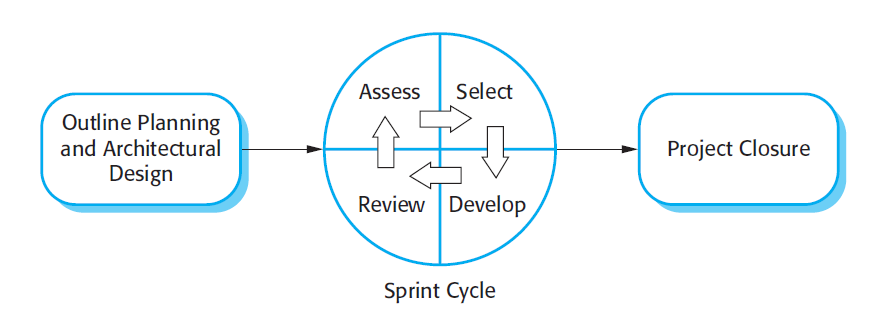

The principal responsibility of software project managers is to manage the project so
that the software is delivered on time and within the planned budget for the project.
They supervise the work of software engineers and monitor how well the software
development is progressing.
The standard approach to project management is plan-driven. As I discuss in
Chapter 23, managers draw up a plan for the project showing what should be delivered, when it should be delivered, and who will work on the development of the project deliverables. A plan-based approach really requires a manager to have a stable
view of everything that has to be developed and the development processes.
However, it does not work well with agile methods where the requirements are
developed incrementally; where the software is delivered in short, rapid increments;
and where changes to the requirements and the software are the norm.
Like every other professional software development process, agile development
has to be managed so that the best use is made of the time and resources available to
the team. This requires a different approach to project management, which is
adapted to incremental development and the particular strengths of agile methods.
The Scrum approach (Schwaber, 2004; Schwaber and Beedle, 2001) is a general
agile method but its focus is on managing iterative development rather than specific
technical approaches to agile software engineering. Figure 3.8 is a diagram of the Scrum
management process. Scrum does not prescribe the use of programming practices such
as pair programming and test-first development. It can therefore be used with more technical agile approaches, such as XP, to provide a management framework for the project
There are three phases in Scrum. The first is an outline planning phase where you
establish the general objectives for the project and design the software architecture.
Figure 3.8 The Scrum Process

This is followed by a series of sprint cycles, where each cycle develops an increment
of the system. Finally, the project closure phase wraps up the project, completes
required documentation such as system help frames and user manuals, and assesses
the lessons learned from the project.
The innovative feature of Scrum is its central phase, namely the sprint cycles.
A Scrum sprint is a planning unit in which the work to be done is assessed, features
are selected for development, and the software is implemented. At the end of a
sprint, the completed functionality is delivered to stakeholders. Key characteristics
of this process are as follows:
1. Sprints are fixed length, normally 2–4 weeks. They correspond to the development of a release of the system in XP.
2. The starting point for planning is the product backlog, which is the list of work
to be done on the project. During the assessment phase of the sprint, this is
reviewed, and priorities and risks are assigned. The customer is closely involved
in this process and can introduce new requirements or tasks at the beginning of
each sprint.
3. The selection phase involves all of the project team who work with the customer
to select the features and functionality to be developed during the sprint.
4. Once these are agreed, the team organizes themselves to develop the software.
Short daily meetings involving all team members are held to review progress
and if necessary, reprioritize work. During this stage the team is isolated from
the customer and the organization, with all communications channelled through
the so-called ‘Scrum master’. The role of the Scrum master is to protect the
development team from external distractions. The way in which the work is
done depends on the problem and the team. Unlike XP, Scrum does not make
specific suggestions on how to write requirements, test-first development, etc.
However, these XP practices can be used if the team thinks they are appropriate.
5. At the end of the sprint, the work done is reviewed and presented to stakeholders.
The next sprint cycle then begins.
The idea behind Scrum is that the whole team should be empowered to make decisions so the term ‘project manager’, has been deliberately avoided. Rather, the ‘Scrum master’ is a facilitator who arranges daily meetings, tracks the backlog of
work to be done, records decisions, measures progress against the backlog, and communicates with customers and management outside of the team.
The whole team attends the daily meetings, which are sometimes ‘stand-up’
meetings to keep them short and focused. During the meeting, all team members
share information, describe their progress since the last meeting, problems that have
arisen, and what is planned for the following day. This means that everyone on the
team knows what is going on and, if problems arise, can replan short-term work to
cope with them. Everyone participates in this short-term planning—there is no topdown direction from the Scrum master.
There are many anecdotal reports of the successful use of Scrum available on the
Web. Rising and Janoff (2000) discuss its successful use in a telecommunication
software development environment, and they list its advantages as follows:
1. The product is broken down into a set of manageable and understandable
chunks.
2. Unstable requirements do not hold up progress
3. The whole team has visibility of everything and consequently team communication is improved.
4. Customers see on-time delivery of increments and gain feedback on how the
product works.
5. Trust between customers and developers is established and a positive culture is
created in which everyone expects the project to succeed.
Scrum, as originally designed, was intended for use with co-located teams where
all team members could get together every day in stand-up meetings. However,
much software development now involves distributed teams with team members
located in different places around the world. Consequently, there are various experiments going on to develop Scrum for distributed development environments (Smits
and Pshigoda, 2007; Sutherland et al., 2007).